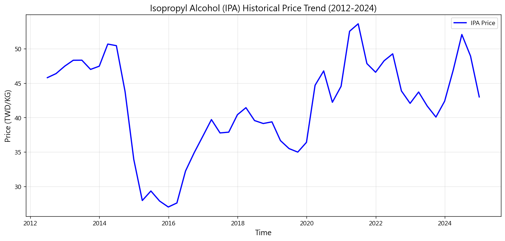
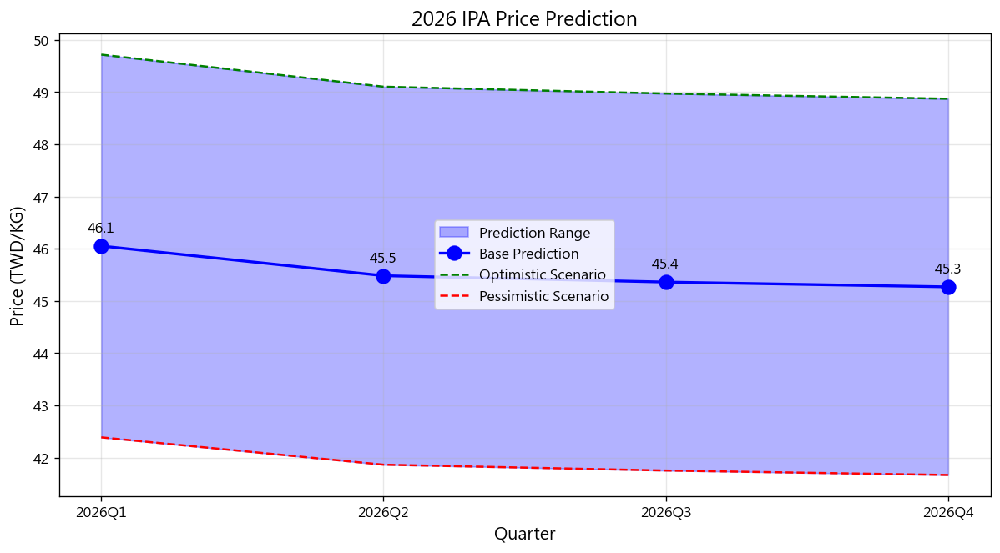
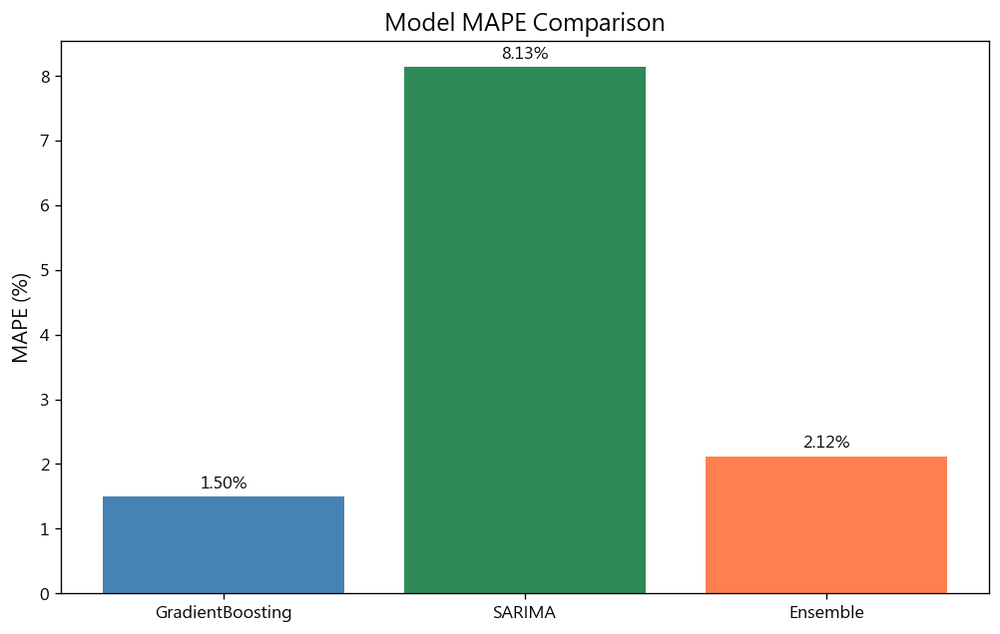

Forecast Year: 2026 | Generated: 2026-02-22 11:23
Base Mean: 45.54 TWD/KG
Optimistic Mean: 49.17 TWD/KG
Pessimistic Mean: 41.92 TWD/KG
| Quarter | Base | Optimistic | Pessimistic |
|---|---|---|---|
| 2026Q1 | 46.05 | 49.72 | 42.39 |
| 2026Q2 | 45.48 | 49.10 | 41.86 |
| 2026Q3 | 45.36 | 48.97 | 41.75 |
| 2026Q4 | 45.27 | 48.87 | 41.67 |



Disclaimer: prediction is for reference only.